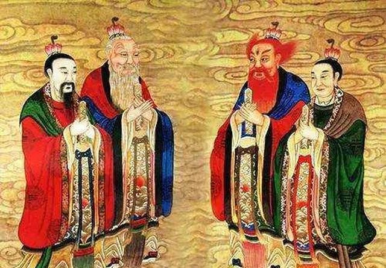

道教是中国本土宗教之一，强调与自然的和谐。它的教义和实践深深植根于中国的文化和哲学中。
道教的核心思想
道教强调“道”的概念，认为宇宙的本源是“道”，一切事物都应顺应自然法则。道教的信徒相信，通过修炼和实践，可以达到与道合一的境界。
道教的历史
道教的起源可以追溯到公元前4世纪的中国，经过几千年的发展，形成了丰富的教义和仪式。道教的经典著作包括《道德经》和《庄子》，这些作品对后世影响深远。
道教在游戏中的体现
在《黑神话·悟空》中，玩家可以看到许多道教元素，如八卦、符咒和道教神仙。游戏中的角色和场景设计都受到了道教文化的影响，玩家可以体验到道教的神秘与魅力。
道教的现代影响
道教在现代社会中仍然发挥着重要作用，影响着人们的生活方式、艺术创作和文化活动。
了解更多
想要深入了解道教的教义和文化，可以参考相关书籍和资料，或访问我们的官方网站获取更多信息。
了解更多